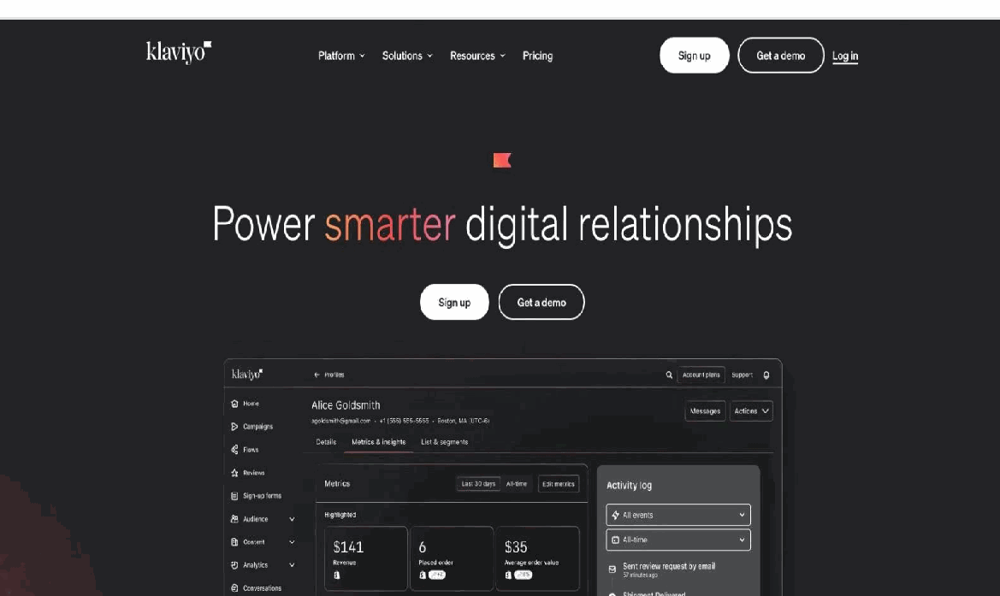
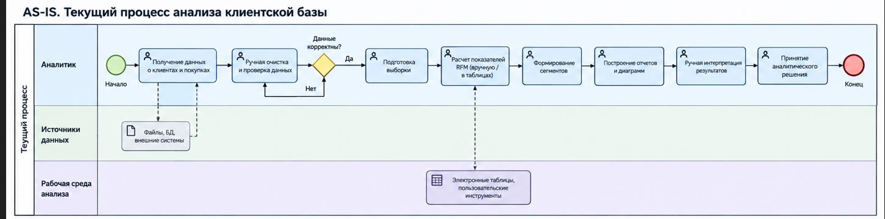
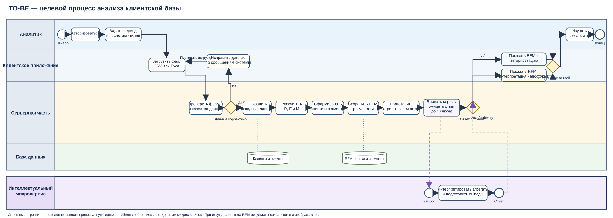

4.1 Анализ предметной области и постановка задачи на разработку
4.1.1 Характеристика предметной области и бизнес-процессов
Разрабатываемое программное средство предназначено для автоматизации анализа клиентской базы на основе истории покупок с использованием метода RFM-анализа и интерактивной визуализации полученных результатов. Программное средство должно обеспечивать обработку информации о клиентах и совершенных ими покупках, расчет основных RFM-показателей, распределение клиентов по сегментам, интеллектуальную интерпретацию полученных результатов и представление аналитической информации в удобной для пользователя форме.
Анализ клиентской базы представляет собой совокупность процессов по сбору, обработке, группировке и исследованию информации о клиентах и их взаимодействии с организацией. Основными источниками информации для такого анализа могут выступать данные о клиентах, заказы, сведения о датах совершения покупок, стоимости заказов и другие характеристики покупательской активности.
При увеличении количества клиентов и объема истории покупок использование ручных методов анализа становится недостаточно эффективным. Обработка значительных массивов данных требует существенных временных затрат, затрудняет регулярное обновление аналитической информации и повышает вероятность ошибок при выполнении расчетов и формировании клиентских групп. Дополнительную сложность представляет необходимость интерпретации полученных результатов: одни и те же числовые показатели могут иметь различное значение в зависимости от структуры клиентской базы и особенностей бизнеса.
В рамках разрабатываемого программного средства в качестве основного метода анализа используется RFM-анализ. Название метода образовано от трех характеристик покупательского поведения клиента:
- Recency (давность) – время, прошедшее с момента последней покупки клиента;
- Frequency (частота) – количество покупок, совершенных клиентом за рассматриваемый период;
- Monetary (денежная величина) – сумма денежных средств, потраченных клиентом за рассматриваемый период.
Таким образом, вместо анализа клиентской базы как единой совокупности пользователей осуществляется выделение групп клиентов с близкими характеристиками покупательского поведения. Полученный RFM-профиль позволяет определить степень активности клиента, частоту взаимодействия с организацией и его денежный вклад.
Основными объектами предметной области являются клиент, покупка, товарная операция, RFM-профиль и клиентский сегмент.
Клиент:
- уникальный идентификатор;
- имя или наименование;
- контактные данные;
- дата регистрации;
- статус клиента;
- дата последней покупки;
- количество совершенных покупок;
- общая сумма покупок.
Покупка:
- уникальный идентификатор;
- идентификатор клиента;
- дата совершения;
- сумма покупки;
- статус операции;
- дополнительные характеристики покупки.
RFM-профиль клиента:
- идентификатор клиента;
- значение Recency;
- значение Frequency;
- значение Monetary;
- оценка по показателю Recency;
- оценка по показателю Frequency;
- оценка по показателю Monetary;
- итоговый RFM-код;
- определенный сегмент.
Клиентский сегмент:
- идентификатор сегмента;
- наименование;
- описание;
- критерии отнесения клиента к сегменту;
- количество клиентов;
- доля сегмента в общей клиентской базе;
- совокупные и средние показатели покупательской активности.
В качестве пользователя программного средства рассматривается специалист, выполняющий анализ клиентской базы. Пользователь взаимодействует с системой через клиентский интерфейс и выполняет операции загрузки или выбора исходных данных, настройки параметров анализа, запуска RFM-анализа, просмотра результатов и фильтрации клиентской базы.
Основными бизнес-процессами предметной области являются:
- получение и загрузка данных о клиентах и покупках;
- проверка корректности исходных данных;
- предварительная обработка данных;
- формирование истории покупок по каждому клиенту;
- расчет показателей Recency, Frequency и Monetary;
- формирование RFM-оценок и RFM-кодов;
- распределение клиентов по сегментам;
- интеллектуальная интерпретация сформированных сегментов;
- формирование аналитических показателей;
- визуализация результатов анализа;
- фильтрация и детальное исследование клиентских сегментов;
- использование результатов анализа для принятия дальнейших управленческих решений.
На этапе получения данных система получает сведения о клиентах и совершенных ими покупках из предусмотренного источника. Перед выполнением расчетов производится проверка исходных данных. Некорректные, неполные или несоответствующие установленным требованиям записи должны быть выявлены на этапе предварительной обработки.
После подготовки данных определяется история покупок каждого клиента. На ее основе рассчитываются значения трех RFM-показателей. Для Recency определяется давность последней покупки, для Frequency – количество покупок, а для Monetary – суммарная стоимость покупок за установленный период.
После получения числовых характеристик выполняется их преобразование в оценки, используемые для формирования RFM-профиля. Комбинация полученных оценок позволяет отнести клиента к определенной группе. При этом границы и правила сегментации должны быть параметризуемыми, поскольку понятия «частая покупка», «недавняя покупка» и «высокая сумма» зависят от особенностей конкретной клиентской базы.
Следующим этапом является интерпретация результатов. Интеллектуальный компонент получает сформированные RFM-признаки и сведения о сегментах и формирует аналитическое описание клиентских групп. Результатом его работы может являться характеристика сегмента, описание типичного поведения клиентов, выявление потенциально значимых изменений и формирование рекомендаций по направлению дальнейшего анализа.
Заключительный этап представляет собой визуальное представление результатов. Пользователь получает доступ к интерактивной аналитической панели, на которой отображаются распределение клиентов по сегментам, количественные и финансовые показатели, характеристики RFM-групп и информация об отдельных клиентах. Для облегчения анализа предусматривается использование фильтров и переход от обобщенных показателей к детальной информации.
Таким образом, предметная область разрабатываемого программного средства охватывает процессы анализа клиентской базы, основанные на истории покупок и направленные на получение структурированной информации о поведении клиентов.
Дополнение: границы, участники и информационные связи
Границы анализа охватывают получение или загрузку клиентских данных, проверку и подготовку истории покупок, расчёт RFM-показателей, присвоение оценок и сегментов, формирование агрегатов, визуальный просмотр и интеллектуальную интерпретацию. Полноценные функции CRM, бухгалтерского учёта, управления продажами и рекламными кампаниями не входят в проект. Источник исходных данных в переданных материалах не конкретизирован; поэтому в настоящем описании он рассматривается как файл или набор сведений, предоставленный для анализа.
Для однозначного понимания терминов основные понятия предметной области сведены в глоссарий (таблица 4.2).
| Термин | Определение в проекте |
|---|---|
| Клиент | Покупатель, которому соответствует уникальный идентификатор и история покупок. |
| Покупка | Операция клиента, учитываемая в расчёте по установленному статусу, дате и сумме. |
| RFM-профиль | Набор числовых значений и оценок R, F и M, RFM-кода и назначенного клиенту сегмента. |
| RFM-код | Последовательность оценок клиента по давности, частоте и сумме покупок. |
| Дата анализа | Дата, относительно которой определяется давность последней покупки. |
| Интеллектуальная интерпретация | Текстовое описание рассчитанных показателей и сегментов, не изменяющее числовые результаты. |
В процессе участвуют аналитик, который загружает данные, задаёт параметры анализа и изучает результаты; руководитель, использующий обобщённые показатели; администратор, управляющий пользователями и доступом; серверная часть, выполняющая проверки и расчёты; интеллектуальный микросервис, формирующий интерпретацию; а также источник исходных данных. Один клиент может иметь несколько покупок, на основании которых формируется один RFM-профиль для выбранного запуска анализа. Профиль относится к одному сегменту, а сегмент включает множество профилей.
Информационный поток начинается с передачи источником сведений об идентификаторе клиента, дате, сумме и статусе покупки. Серверная часть проверяет и подготавливает записи, рассчитывает показатели и сегменты. Интеллектуальному микросервису передаются агрегированные характеристики сегментов; в ответ возвращается текстовая интерпретация. Пользовательский интерфейс показывает показатели, таблицы, диаграммы, списки клиентов и полученное заключение.
К основным точкам принятия решений относятся проверка обязательных полей и форматов, определение учитываемых статусов покупок, выбор оценки по каждому RFM-показателю, отнесение к сегменту и проверка доступности интеллектуального микросервиса. При некорректных данных пользователь получает сведения об ошибках до запуска анализа; если микросервис недоступен, основные числовые результаты остаются доступными.
В качестве предпосылок принимается, что входной набор содержит идентификатор клиента, дату покупки, сумму и статус операции, а денежные значения представлены в согласованной валюте. Эти условия необходимо подтвердить при уточнении формата входных данных и правил учёта отмен и возвратов. Ограничениями проекта являются учебный характер разработки, заданная архитектура с отдельным интеллектуальным компонентом и отсутствие функций полноценной CRM, учётной системы и управления маркетинговыми кампаниями.
4.1.2 Обоснование необходимости применения интеллектуального решения
Использование RFM-анализа позволяет получить формализованное представление о покупательской активности клиентов. Однако расчет показателей Recency, Frequency и Monetary сам по себе не решает задачу интерпретации результатов. После выполнения расчетов пользователь получает набор числовых значений и сегментов, которые необходимо сопоставить между собой, определить характеристики соответствующих групп и выделить наиболее значимые особенности клиентской базы.
При небольшом объеме данных подобная интерпретация может выполняться специалистом вручную. Однако при увеличении количества клиентов и числа сегментов возрастает сложность анализа. Пользователю необходимо одновременно учитывать несколько показателей, сравнивать размеры сегментов, оценивать их денежный вклад и анализировать изменения структуры клиентской базы.
RFM-анализ непосредственно ориентирован на разделение клиентов по давности, частоте и сумме покупок. Подобный подход используется в современных аналитических и маркетинговых системах. Например, в Mindbox RFM-сегментация выполняется автоматически на основании данных о покупках клиентов, а каждому клиенту присваиваются оценки по трем RFM-признакам. В Klaviyo предусмотрен отдельный RFM-отчет, позволяющий анализировать покупательское поведение, распределение клиентов по группам и изменения состава групп во времени.
Следовательно, в рамках разрабатываемого программного средства целесообразно автоматизировать не только математическую часть RFM-анализа, но и последующую интерпретацию результатов.
Интеллектуальный компонент программного средства предназначается для анализа сформированных RFM-профилей и клиентских сегментов. Он должен получать структурированные результаты классической аналитической обработки и на их основе формировать интерпретацию, понятную пользователю. При этом расчет базовых RFM-показателей относится к классической бизнес-логике и выполняется серверной частью, а интеллектуальная обработка должна быть изолирована в отдельном компоненте.
В рамках системы интеллектуальный компонент может решать следующие задачи:
- анализ распределения клиентов между RFM-сегментами;
- формирование текстовой характеристики сегмента;
- выявление сегментов с высокой концентрацией клиентов;
- определение групп с высокой денежной ценностью;
- выявление групп клиентов, характеризующихся снижением покупательской активности;
- формирование рекомендаций по направлениям дальнейшего анализа;
- подготовка краткого аналитического заключения по результатам проведенного RFM-анализа.
Принципиально важно разделять расчет и интерпретацию. Значения Recency, Frequency и Monetary должны определяться на основе исходных данных по установленным правилам и не зависеть от субъективного мнения интеллектуального компонента. Интеллектуальная составляющая используется на следующем уровне – для объяснения уже рассчитанных результатов и представления их в форме, удобной для аналитика.
Такое разделение позволяет избежать ситуации, при которой интеллектуальный компонент непосредственно изменяет исходные показатели и тем самым делает результат анализа трудно проверяемым. Числовые результаты должны оставаться воспроизводимыми, а интеллектуальная часть должна выполнять функцию аналитической интерпретации.
Необходимость интеллектуального решения также обусловлена требованиями задания на курсовое проектирование, согласно которым программное средство должно включать клиентский, серверный и интеллектуальный компоненты, а интеллектуальная составляющая должна быть реализована в виде изолированного микросервиса.
Таким образом, применение интеллектуального компонента позволяет расширить стандартный RFM-анализ от простого расчета и сегментации до автоматизированного формирования аналитического заключения, сохранив при этом прозрачность и воспроизводимость основных расчетов.
4.1.3 Анализ существующих аналогов и решений
При анализе существующих решений целесообразно рассмотреть программные продукты и платформы, которые предоставляют функции RFM-анализа, сегментации клиентов, аналитической визуализации и интерпретации данных. В качестве основных критериев сравнения рассматриваются:
- наличие RFM-анализа;
- автоматизация формирования клиентских сегментов;
- возможность настройки параметров сегментации;
- аналитическая визуализация;
- детализация информации о клиентах;
- возможность интеллектуальной обработки данных;
- возможность интеграции с внешними источниками;
- возможность использования решения как самостоятельного аналитического инструмента.
Mindbox
Mindbox представляет собой платформу клиентских данных и автоматизации маркетинга. В платформе предусмотрена сегментация клиентов по RFM, а также другие варианты сегментации. Документация Mindbox указывает, что RFM-сегментирование основано на трех характеристиках – давности покупки, частоте покупок и сумме трат клиента. Система автоматически распределяет клиентов по RFM-сегментам и периодически обновляет результаты.
Сильной стороной решения является тесная связь RFM-сегментации с последующими маркетинговыми сценариями и работой с клиентской базой. Платформа также предоставляет единый профиль клиента и поддерживает автоматическое обновление сегментов.
Ограничением такого подхода в рамках разрабатываемого проекта является ориентация платформы на широкий комплекс задач клиентского маркетинга. Для учебного программного средства избыточная функциональность подобной платформы не требуется. Кроме того, внутренние механизмы платформы скрывают от пользователя часть деталей реализации RFM-анализа, тогда как разрабатываемое программное средство должно демонстрировать сам процесс формирования показателей, сегментов и результатов анализа.
Дизайн приложения изображен на рисунке 4.3.
Klaviyo
Klaviyo предоставляет специализированный RFM-отчет в составе аналитической функциональности. Отчет использует Recency, Frequency и Monetary для определения клиентских групп, позволяет анализировать распределение клиентов и предоставляет отдельные сведения по RFM-показателям.
В Klaviyo также предусмотрена возможность создания сегментов на основе RFM-свойств, включая текущую и предыдущую RFM-группу клиента. Это позволяет использовать результаты анализа для дальнейшей работы с клиентскими группами.
Преимуществом данного решения является развитая аналитическая составляющая и связь RFM-анализа с сегментацией. Вместе с тем RFM является частью более крупной маркетинговой платформы. Разрабатываемое программное средство ориентируется непосредственно на задачу анализа клиентской базы, поэтому может предоставить более специализированный и прозрачный пользовательский сценарий.
Дизайн приложения изображен на рисунке 4.4.

Аналитические решения на основе BI-инструментов
Другим вариантом выполнения RFM-анализа является использование универсальных инструментов бизнес-аналитики. В этом случае данные о клиентах и покупках загружаются в аналитическую систему, после чего пользователь самостоятельно формирует вычисляемые показатели, сегменты и визуализации.
Преимуществом такого подхода является высокая гибкость построения отчетов и возможность создавать различные графики, таблицы и фильтры. Недостатком является необходимость самостоятельной реализации предметной логики RFM-анализа, подготовки исходных данных и настройки расчетов. Универсальный BI-инструмент также не является специализированным решением для автоматизированной интерпретации RFM-сегментов.
В таблице 4.1 представлено сравнение рассмотренных решений.
| Критерий | Mindbox | Klaviyo | BI-инструменты | Разрабатываемое программное средство |
|---|---|---|---|---|
| RFM-анализ | Есть | Есть | Реализуется пользователем | Есть |
| Автоматическая сегментация | Есть | Есть | Требует настройки | Есть |
| Настройка параметров RFM | Есть | Есть | Высокая гибкость | Предусматривается |
| Интерактивная визуализация | Есть | Есть | Сильная сторона | Основная функция |
| Детализация по клиентам | Есть | Есть | Зависит от модели данных | Есть |
| Интеллектуальная интерпретация | Присутствуют дополнительные алгоритмы и ML-функции | Аналитическая автоматизация | Как правило, требует отдельной настройки | Предусматривается как отдельный компонент |
| Специализация на RFM-анализе | RFM является частью CDP/маркетинговой платформы | RFM является частью аналитической платформы | Универсальное назначение | Специализированное учебное решение |
| Изолированный интеллектуальный компонент | Не является основной особенностью решения | Не является основной особенностью решения | Не является обязательной частью | Предусматривается |
Рассмотренные решения демонстрируют, что RFM-анализ является
применяемым инструментом исследования клиентской базы. Mindbox предоставляет автоматическую RFM-сегментацию в составе платформы клиентских данных, а Klaviyo – специализированный RFM-отчет с возможностью последующего использования RFM-групп при построении сегментов.
Вместе с тем целью разрабатываемого программного средства является не создание универсальной CRM-или маркетинговой платформы, а реализация специализированного решения для анализа клиентской базы. Основное отличие заключается в совмещении трех составляющих: автоматизированного RFM-анализа, интерактивной визуализации и отдельного интеллектуального компонента, предназначенного для интерпретации результатов.
Функциональный обзор аналогов по методическим требованиям
Для каждого выбранного продукта ниже приведены разработчик, официальный сайт, назначение и ссылка на страницу с описанием функций. Характеристики составлены по официальной документации поставщиков; наличие отдельных возможностей может зависеть от тарифа и подключения необходимых данных.
| Название аналога | Mindbox — RFM-сегментирование |
|---|---|
| Компания-разработчик | ООО «Майндбокс» [2] |
| Официальный сайт | https://mindbox.ru/ |
| Назначение аналога | Платформа клиентских данных и автоматизации маркетинга; RFM применяется для сегментации клиентской базы и последующей настройки маркетинговой работы. |
| Страница функциональности | https://help.mindbox.ru/docs/как-работает-rfm-сегментирование [1] |
| Функциональность | Оценивает давность, частоту и сумму покупок; автоматически распределяет клиентов по 13 RFM-сегментам; использует пятиуровневую оценку признаков; обновляет сегменты ежедневно; позволяет применять сформированные сегменты в маркетинговой работе. В документации описаны расчёт по данным за предыдущие 365 дней и исключение отменённых и возвращённых заказов. |
| Название аналога | Klaviyo — RFM analysis report |
|---|---|
| Компания-разработчик | Klaviyo, Inc. [3] |
| Официальный сайт | https://www.klaviyo.com/ |
| Назначение аналога | Платформа B2C-маркетинга и клиентской аналитики; RFM-отчёт предназначен для исследования покупательского поведения и использования сегментов в маркетинговых сценариях. |
| Страница функциональности | https://help.klaviyo.com/hc/en-us/articles/17797889315355 [3] |
| Функциональность | Показывает RFM-группы и изменение их состава; позволяет задавать период отчёта и настраивать метрику конверсии и пороги оценок; отображает текущую и предыдущую RFM-группу в профиле клиента; позволяет использовать RFM-свойства при создании сегментов. Доступность отчёта зависит от продукта/подписки и наличия достаточной истории заказов. |
| Название аналога | Microsoft Power BI |
|---|---|
| Компания-разработчик | Microsoft Corporation [4] |
| Официальный сайт | https://powerbi.microsoft.com/ |
| Назначение аналога | Универсальная платформа бизнес-аналитики для построения интерактивных отчётов и визуализации данных. |
| Страница функциональности | https://learn.microsoft.com/en-us/power-bi/visuals/power-bi-visualizations-overview [4] |
| Функциональность | Предоставляет диаграммы, таблицы, матрицы и карточки показателей; поддерживает фильтры и срезы на разных уровнях отчёта, перекрёстное взаимодействие визуализаций и переход к деталям. Специфические правила RFM и клиентские сегменты требуется самостоятельно настроить на основе модели данных. |
Обзор подтверждает вывод исходного текста: специализированные платформы предлагают готовое RFM-сегментирование, а универсальный BI-инструмент отличается гибкостью визуального анализа, но требует самостоятельной реализации предметных расчётов. Проектируемое средство занимает более узкую область и объединяет автоматизированный RFM-расчёт, интерактивное представление и отдельный компонент интерпретации.
Источники функционального обзора:
- Mindbox. Как работает RFM-сегментирование [1]. URL: https://help.mindbox.ru/docs/как-работает-rfm-сегментирование (дата обращения: 11.10.2026).
- ООО «Майндбокс». Сведения о компании и правообладателе сервиса [2]. URL: https://mindbox.ru/documents/company_details/ (дата обращения: 11.10.2026).
- Klaviyo. Getting started with the RFM analysis report [3]. URL: https://help.klaviyo.com/hc/en-us/articles/17797889315355 (дата обращения: 11.10.2026).
- Microsoft Learn. Visualizations overview in Power BI [4]. URL: https://learn.microsoft.com/en-us/power-bi/visuals/power-bi-visualizations-overview (дата обращения: 11.10.2026).
4.1.4 Анализ научно-технических подходов и методов решения
Основным аналитическим методом, используемым в программном средстве, является RFM-анализ. Данный метод предназначен для сегментации клиентов на основе истории их покупок по трем характеристикам: Recency, Frequency и Monetary. Такая модель используется в современных клиентских аналитических системах, в частности Mindbox и Klaviyo.
Расчет показателя Recency
Показатель Recency характеризует давность последней покупки клиента. Для его определения необходимо выбрать дату, относительно которой выполняется анализ, и найти дату последней завершенной покупки клиента.
Общий вид расчета:
R = Dанализа − Dпоследней покупки,
где Dанализа – дата, относительно которой выполняется анализ; Dпоследней покупки – дата последней покупки клиента.
Полученное значение может измеряться в днях. Чем меньше значение Recency, тем более недавно клиент взаимодействовал с организацией.
Расчет показателя Frequency
Показатель Frequency характеризует количество покупок клиента за рассматриваемый период:
F = Nпокупок,
где Nпокупок – количество учитываемых покупок клиента.
При расчете необходимо определить, какие операции считаются покупками. Например, отмененные или возвращенные заказы не должны учитываться в качестве завершенных покупок, если это предусмотрено правилами предметной области.
Расчет показателя Monetary
Показатель Monetary характеризует денежный объем покупок клиента:
M = ΣSi,
где Si – стоимость i-й учитываемой покупки клиента.
Таким образом, для каждого клиента формируется набор:
RFM = (R, F, M).
Полученные значения могут быть преобразованы в баллы. Количество градаций должно задаваться параметрами системы. Например, может использоваться шкала от 1 до 5, при которой клиенты распределяются по квантилям соответствующего показателя. Подобный подход применяется в существующих системах RFM-сегментации: например, документация Mindbox описывает распределение пользователей по пяти группам для каждого из трех показателей.
При этом направление оценки Recency отличается от Frequency и Monetary. Для Recency меньшая давность покупки соответствует более высокой активности клиента, тогда как для Frequency и Monetary более высокие значения показателя обычно соответствуют более высокой активности или ценности клиента.
После определения трех оценок формируется RFM-код. Например, комбинация трех оценок может иметь вид 555, 352 или 211. Код позволяет компактно представить положение клиента по трем характеристикам.
Однако использование только RFM-кода не всегда является удобным для конечного пользователя. Поэтому следующим этапом является сопоставление RFM-кодов с понятными названиями сегментов. Например, система может выделять группы активных, лояльных, новых, требующих внимания, неактивных и других клиентов. Конкретные границы сегментов должны задаваться параметрами программного средства и учитывать специфику анализируемой клиентской базы.
Важным научно-техническим подходом является использование квантильной сегментации. В отличие от фиксированных порогов, квантильный подход позволяет распределять клиентов относительно других участников клиентской базы. Это особенно важно для показателей Frequency и Monetary, значения которых могут значительно различаться в разных предметных областях. При этом универсальных порогов RFM для всех видов бизнеса не существует: подходящие границы зависят от частоты покупок, среднего чека и длительности цикла повторной покупки. Такой принцип также отмечается в материалах по практическому применению RFM-анализа.
Для визуального анализа целесообразно использовать несколько видов представления информации:
- круговые или кольцевые диаграммы для отображения структуры клиентской базы;
- столбчатые диаграммы для сравнения размеров сегментов;
- таблицы для детального просмотра клиентов;
- распределения значений R, F и M;
- карточки с ключевыми показателями;
- интерактивные фильтры по сегментам и диапазонам показателей.
Отдельным техническим подходом является применение микросервисной архитектуры для интеллектуального компонента. В соответствии с заданием на курсовое проектирование классическая бизнес-логика должна находиться на серверной части, а интеллектуальная составляющая должна быть реализована в виде изолированного микросервиса.
Предполагается следующая логика взаимодействия компонентов:
Клиентская часть отвечает за взаимодействие с пользователем и отображение результатов. Серверная часть выполняет авторизацию, работу с данными, расчет RFM-показателей, управление бизнес-логикой и взаимодействие с интеллектуальным компонентом. Интеллектуальный микросервис получает подготовленные данные и возвращает результат их интерпретации.
Такое разделение позволяет независимо развивать интеллектуальный компонент, не смешивая его с основной бизнес-логикой приложения. Кроме того, результаты интеллектуальной обработки могут быть проверены на основе исходных RFM-показателей.
Таким образом, в основе решения используется комбинация классических методов обработки данных, RFM-сегментации, интерактивной визуализации и интеллектуальной интерпретации.
4.1.5 Постановка задачи
Целью курсового проекта является проектирование и разработка программного средства анализа клиентской базы на основе RFM-анализа с интерактивной визуализацией результатов и использованием интеллектуального компонента для их интерпретации.
Разрабатываемое программное средство должно обеспечить автоматизацию основных операций анализа клиентской базы и предоставить пользователю возможность получать структурированную аналитическую информацию без необходимости самостоятельного выполнения расчетов.
Для достижения поставленной цели необходимо решить следующие задачи:
1. Исследовать предметную область анализа клиентской базы и определить основные объекты и бизнес-процессы.
2. Исследовать существующие программные решения, использующие RFM-анализ, сегментацию клиентов и визуальную аналитику.
3. Проанализировать существующие методы расчета и сегментации клиентов по показателям Recency, Frequency и Monetary.
4. Определить требования к исходным данным, необходимым для проведения RFM-анализа.
5. Разработать концепцию программного средства анализа клиентской базы.
6. Определить состав клиентского, серверного и интеллектуального компонентов программного средства.
7. Разработать механизм подготовки данных и расчета показателей Recency, Frequency и Monetary.
8. Реализовать механизм формирования RFM-оценок и клиентских сегментов.
9. Разработать интеллектуальный компонент для интерпретации результатов RFM-анализа.
10. Реализовать интерактивное представление результатов анализа в виде аналитической панели.
11. Обеспечить возможность фильтрации и детального просмотра информации о клиентских сегментах.
12. Обеспечить авторизацию пользователей программного средства.
13. Обеспечить взаимодействие серверной части с интеллектуальным микросервисом.
14. Подготовить BPMN-модель основных процессов анализа клиентской базы.
Объектом разработки является процесс анализа клиентской базы на основе истории покупок.
Предметом разработки являются методы, модели, алгоритмы и программные средства автоматизированного RFM-анализа, сегментации и интерактивной визуализации клиентских данных с использованием интеллектуального компонента.
Входными данными программного средства являются сведения о клиентах и истории их покупок. Основными выходными данными являются рассчитанные RFM-показатели, RFM-коды, клиентские сегменты, агрегированные аналитические показатели, визуализации и результаты интеллектуальной интерпретации.
Функционально программное средство должно обеспечивать:
- авторизацию пользователя;
- загрузку и обработку клиентских данных;
- проверку корректности исходной информации;
- расчет RFM-показателей;
- формирование RFM-оценок;
- сегментацию клиентской базы;
- просмотр характеристик сегментов;
- фильтрацию результатов;
- просмотр информации о клиентах;
- интерактивную визуализацию;
- интеллектуальную интерпретацию результатов;
- формирование аналитического заключения.
В результате разработки должно быть создано программное средство, позволяющее автоматизировать процесс анализа клиентской базы и представить результаты RFM-анализа в форме, удобной для специалиста, выполняющего аналитическую работу.
Таким образом, поставленная задача заключается в создании программного решения, объединяющего обработку клиентских данных, RFM-сегментацию, интерактивную визуализацию и интеллектуальную интерпретацию результатов в единой программной системе.
4.2 Исследование и концептуальное моделирование предметной области. Разработка требований к программному решению
4.2.1 Описание бизнес-контекста и текущих процессов. Обоснование автоматизации
В качестве предмета исследования в курсовом проекте рассматривается процесс анализа клиентской базы организации, а в качестве объекта исследования — процессы подготовки, обработки и интерпретации информации о клиентах и совершенных ими покупках. Основной целью анализа является получение объективной информации о покупательской активности клиентов, выделение однородных групп и предоставление специалисту инструментов для оперативного исследования полученных результатов.
В рассматриваемой предметной области исходная информация представлена сведениями о клиентах и истории совершенных ими покупок. Для проведения RFM-анализа необходимы как минимум идентификатор клиента, дата покупки и стоимость покупки. Дополнительно могут использоваться контактные и организационные сведения о клиенте, идентификаторы заказов, категории товаров и другие атрибуты, позволяющие проводить дополнительную фильтрацию и анализ.
До внедрения специализированного программного средства процесс анализа клиентской базы может выполняться с использованием электронных таблиц, выгрузок из учетных систем и ручной обработки данных. При таком подходе специалист самостоятельно получает исходную информацию, проверяет ее корректность, выполняет необходимые расчеты, формирует группы клиентов и строит графики для последующего анализа.
Основной процесс AS-IS изображен на рисунке 4.3.

Краткое описание AS-IS процесса:
На первом этапе специалист получает выгрузку с информацией о клиентах и покупках. Источником может выступать существующая информационная система, база данных или подготовленный файл.
На втором этапе выполняется предварительная обработка данных. Специалист проверяет наличие обязательных полей, корректность дат, денежных значений, идентификаторов клиентов и покупок. При обнаружении ошибок данные исправляются вручную или формируется новая выгрузка.
После подготовки данных специалист выполняет расчет показателей RFM. Для каждого клиента определяется дата последней покупки, количество покупок за рассматриваемый период и суммарная стоимость покупок. Полученные значения далее используются для определения RFM-оценок.
На следующем этапе осуществляется сегментация клиентской базы. Клиенты распределяются по группам в зависимости от комбинации полученных оценок. В случае использования электронных таблиц часть операций может выполняться с помощью формул и фильтров, однако настройка расчетов и контроль их корректности остаются обязанностью специалиста.
После формирования сегментов строятся аналитические отчеты и графики. Специалист анализирует размер клиентских групп, их денежный вклад, активность и другие показатели. Итоговые выводы формируются вручную.
Таким образом, текущий процесс содержит значительное количество повторяющихся операций. При небольшом количестве клиентов такой подход может быть приемлемым, однако при увеличении объема данных возрастает продолжительность анализа и сложность поддержания расчетов в актуальном состоянии.
Основными проблемами существующего подхода являются:
- необходимость ручной подготовки и проверки исходных данных;
- выполнение повторяющихся расчетов;
- вероятность ошибок при обработке данных;
- необходимость повторного построения отчетов при изменении исходной информации;
- отсутствие единого рабочего пространства для анализа клиентской базы;
- ограниченные возможности интерактивной фильтрации;
- необходимость самостоятельной интерпретации большого количества показателей;
- сложность оперативного сравнения клиентских сегментов;
- отсутствие автоматизированного интеллектуального анализа полученных результатов.
Особенно существенной проблемой является переход от числовых результатов к аналитическому выводу. RFM-анализ позволяет получить формальные показатели и сегменты, однако специалисту необходимо самостоятельно определить, какие группы являются наиболее значимыми, какие из них требуют дополнительного изучения и какие особенности поведения характерны для каждой группы.
В связи с этим возникает необходимость автоматизации процесса анализа клиентской базы.
Анализ модели AS-IS, узкие места и рекомендации по улучшению
Построенная модель отражает последовательность получения выгрузки, ручной проверки и исправления данных, расчета RFM-показателей, сегментации, подготовки отчетов и принятия аналитического решения. По признакам, указанным в методических рекомендациях, в этой последовательности выявляются следующие узкие места.
| Узкое место | Проявление в процессе | Рекомендация |
|---|---|---|
| Ручная подготовка и проверка данных | Проверка обязательных полей, дат, сумм и идентификаторов выполняется специалистом; ошибки исправляются вручную или требуют повторной выгрузки. | Автоматизировать проверку структуры и значений, показывать перечень ошибок и возвращать пользователя к исправлению данных до расчета. |
| Повторяющиеся вычисления и построение отчетов | При изменении исходной информации специалист повторяет расчеты и формирование аналитических материалов. | Выполнять расчеты и формировать визуализации автоматически по заданным параметрам, сохранять параметры анализа и обеспечивать повторный запуск. |
| Ручная настройка и контроль сегментации | Формулы и фильтры таблиц настраиваются и проверяются специалистом, поэтому повышается риск ошибок и расхождения результатов. | Реализовать единые проверяемые правила расчета оценок и сегментов, отделить их от интеллектуальной интерпретации. |
| Интерпретация результатов вручную | Переход от показателей и сегментов к выводам зависит от самостоятельного анализа специалиста. | Формировать поясняющую интерпретацию на основе уже рассчитанных данных и явно сохранять исходные показатели неизменными. |
| Нет единой интерактивной среды | Данные, расчеты, отчеты и визуализации могут находиться в разных файлах и инструментах; сравнение сегментов и детализация затруднены. | Предоставить единое рабочее пространство с фильтрами, аналитической панелью и переходом от сводных показателей к карточке клиента. |
Ограничение достоверности AS-IS. В исходном описании текущий процесс сформулирован как возможный вариант работы («может выполняться» с использованием таблиц и выгрузок), а конкретная организация и результаты наблюдения или интервью не указаны. Поэтому модель следует считать обобщенной гипотезой процесса. Для окончательной сдачи ее необходимо сверить с фактическими действиями выбранного аналитика или организации: подтвердить источники данных, роли, способы исправления ошибок, периодичность анализа и используемые инструменты. Не следует представлять предположения как результаты обследования.
Бизнес-цели проекта
Основными бизнес-целями разработки программного средства являются:
- сокращение времени подготовки и проведения RFM-анализа;
- снижение количества ошибок при обработке клиентских данных;
- повышение прозрачности структуры клиентской базы;
- обеспечение оперативного получения информации о клиентских сегментах;
- сокращение ручных операций при подготовке аналитических материалов;
- повышение удобства анализа результатов за счет интерактивной визуализации;
- автоматизация формирования аналитических выводов на основе результатов RFM-анализа.
Возможности бизнеса
После внедрения программного средства пользователь должен получить возможность:
- загружать и обрабатывать клиентские данные;
- автоматически рассчитывать RFM-показатели;
- автоматически формировать клиентские сегменты;
- получать сводную информацию о структуре клиентской базы;
- исследовать сегменты с помощью интерактивных фильтров;
- просматривать информацию об отдельных клиентах;
- получать автоматизированную интерпретацию результатов;
- использовать результаты анализа при принятии решений по дальнейшей работе с клиентской базой.
Критерии успеха проекта
Успешность разработки предполагается оценивать по следующим критериям:
- основные операции RFM-анализа выполняются автоматически;
- результаты анализа воспроизводимы при одинаковых входных данных и параметрах;
- пользователь может получить результаты анализа без выполнения ручных расчетов;
- результаты представлены в виде интерактивных таблиц и диаграмм;
- пользователь может фильтровать клиентскую базу и отдельные сегменты;
- интеллектуальный компонент формирует интерпретацию на основе рассчитанных системой показателей;
- система обеспечивает разграничение доступа и защиту пользовательских данных;
- время формирования результата анализа соответствует установленным требованиям к производительности.
Бизнес-риски и ограничения
К основным рискам проекта относятся:
- низкое качество исходных данных;
- наличие дубликатов клиентов;
- пропуски обязательных значений;
- некорректные даты или суммы покупок;
- неправильное определение периода анализа;
- некорректная интерпретация результатов при использовании неподходящих параметров сегментации;
- зависимость интеллектуального компонента от качества подготовленных данных;
- необходимость защиты клиентской информации от несанкционированного доступа.
Для снижения влияния указанных факторов программное средство должно выполнять предварительную проверку исходных данных, информировать пользователя об обнаруженных ошибках и разделять этап расчета объективных RFM-показателей и этап интеллектуальной интерпретации.
Таким образом, анализ текущего бизнес-контекста показывает, что существующий процесс может быть существенно усовершенствован за счет автоматизации подготовки данных, расчета RFM-показателей, сегментации, визуализации и интерпретации результатов.
4.2.2 Разработка концепции интеллектуального решения и моделирование целевых процессов
В рамках курсового проекта предлагается разработать программное средство, объединяющее функции обработки клиентской базы, RFM-анализа, сегментации, интерактивной визуализации и интеллектуальной интерпретации результатов.
Концепция программного средства основывается на разделении системы на три основных компонента:
- клиентский компонент — обеспечивает пользовательский интерфейс, отображение аналитической информации, работу фильтров и взаимодействие пользователя с системой;
- серверный компонент — реализует основную бизнес-логику, обработку данных, расчет RFM-показателей, управление пользователями и взаимодействие с хранилищем данных;
- интеллектуальный компонент — отдельный микросервис, предназначенный для анализа результатов RFM-обработки и формирования их интеллектуальной интерпретации.
Такое разделение соответствует требованиям задания на курсовое проектирование, предусматривающего наличие клиентского, серверного и интеллектуального компонентов и выделение интеллектуальной части в отдельный микросервис.
Общий процесс работы целевого программного средства имеет следующий вид:
После авторизации аналитик задаёт период анализа и число квантилей, затем загружает подготовленный файл в формате CSV или Excel. Сервер проверяет структуру и качество данных. Если проверка выявляет ошибки, система сообщает о них, аналитик исправляет файл и загружает его повторно. Расчёт запускается только после успешной проверки.
После проверки данных серверная часть выполняет расчёт Recency, Frequency и Monetary. Полученные показатели преобразуются в оценки в соответствии с установленными правилами сегментации. На основе оценок формируется RFM-профиль каждого клиента.
Следующим этапом является формирование клиентских сегментов. Для каждого сегмента определяются количество клиентов, доля сегмента в общей клиентской базе, совокупные и средние значения основных показателей.
После формирования сегментов серверная часть передает в интеллектуальный микросервис необходимые агрегированные данные и характеристики сегментов.
Интеллектуальный компонент не должен самостоятельно изменять рассчитанные RFM-показатели. Его задачей является анализ уже подготовленных результатов. На основании полученных данных он формирует текстовую интерпретацию, которая может включать:
- характеристику клиентского сегмента;
- описание его размера;
- оценку покупательской активности;
- оценку денежного вклада;
- выявление групп, требующих дополнительного внимания;
- формирование направлений дальнейшего анализа.
Результат работы интеллектуального компонента возвращается серверной части и объединяется с остальными результатами анализа.
После этого клиентский компонент отображает результаты в интерактивной аналитической панели. Пользователь может просматривать общую структуру клиентской базы, отдельные сегменты, RFM-показатели и результаты интеллектуальной интерпретации.
Целевой процесс TO-BE изображен на рисунке 4.4.

На рисунке 4.4 показан целевой процесс от настройки анализа и загрузки файла до просмотра результата аналитиком. В модели участвуют аналитик, клиентское приложение, серверная часть, база данных и отдельный интеллектуальный микросервис. Основные вычисления и сегментацию выполняет сервер; микросервис получает агрегированные результаты только для их интерпретации.
Аналитик авторизуется, задаёт период анализа и число квантилей, после чего загружает файл с данными о клиентах и покупках. Сервер проверяет файл. Если данные некорректны, пользователь получает сообщение об ошибках, исправляет их и повторяет загрузку. При успешной проверке исходные данные сохраняются в базе данных.
Затем сервер рассчитывает Recency, Frequency и Monetary для каждого клиента, преобразует показатели в оценки и формирует сегменты. RFM-результаты сохраняются в базе данных. Для интеллектуальной интерпретации сервер отдельно подготавливает агрегаты по сегментам и передаёт их микросервису.
После сохранения данных серверная часть инициирует расчёт RFM-анализа. На основании истории покупок для каждого клиента автоматически рассчитываются три основных показателя:
- Recency (R) — давность последней покупки клиента;
- Frequency (F) — частота совершения покупок;
- Monetary (M) — денежный объём покупок клиента за рассматриваемый период.
Полученные значения используются для формирования RFM-оценок клиентов. На основании рассчитанных показателей каждому клиенту присваивается соответствующая оценка по компонентам R, F и M, после чего выполняется сегментация клиентской базы. Результаты расчёта и сформированные сегменты сохраняются в базе данных.
После формирования сегментов система передаёт агрегированные результаты в интеллектуальный микросервис. Интеллектуальный компонент выполняет анализ полученной информации, определяет характерные особенности сформированных клиентских сегментов и формирует их текстовую интерпретацию и аналитические рекомендации. При этом интеллектуальный компонент используется для интерпретации результатов, а сами исходные значения RFM и правила сегментации определяются серверной частью программного средства.
Если микросервис возвращает ответ в установленный системой интервал, сервер объединяет интерпретацию с RFM-показателями и сегментами. Если ответа нет или истёк тайм-аут, сервер передаёт в клиентское приложение основные результаты RFM-анализа без интерпретации. В обоих случаях приложение показывает аналитическую панель, а аналитик изучает результаты. Фильтрация сегментов и просмотр карточки клиента относятся к дальнейшей работе с панелью и на рисунке 4.4 отдельно не детализируются.
После просмотра панели аналитик использует распределение клиентов по сегментам, RFM-показатели и доступную интерпретацию для дальнейшего анализа клиентской базы и выбора действий в отношении клиентских групп.
Таким образом, целевая модель TO-BE предусматривает переход от преимущественно ручного выполнения операций к автоматизированному процессу, в котором расчёт RFM-показателей, сегментация, хранение результатов, их визуализация и интеллектуальная интерпретация выполняются средствами единого программного решения. Это позволяет сократить количество ручных операций и обеспечить единый последовательный процесс обработки и анализа клиентских данных.
Основные бизнес-правила
Для программного средства предлагается определить следующие бизнес-правила.
BR-01. Для проведения RFM-анализа клиент должен иметь хотя бы одну учитываемую покупку за рассматриваемый период.
BR-02. В расчет должны включаться только покупки, соответствующие установленному статусу операции.
BR-03. Recency определяется относительно установленной даты анализа.
BR-04. Frequency определяется количеством учитываемых покупок клиента за заданный период.
BR-05. Monetary определяется суммой стоимости учитываемых покупок клиента за заданный период.
BR-06. Клиентский сегмент определяется на основании установленных правил сопоставления RFM-оценок.
BR-07. Изменение исходных данных или параметров анализа должно приводить к повторному расчету результатов.
BR-08. Интеллектуальный компонент получает подготовленные результаты RFM-анализа и не изменяет исходные расчетные показатели.
BR-09. Доступ к клиентской информации предоставляется только авторизованным пользователям с соответствующими правами.
BR-10. При невозможности выполнения интеллектуальной обработки основные результаты RFM-анализа должны оставаться доступными пользователю.
Таким образом, целевой процесс предполагает переход от последовательности преимущественно ручных операций к автоматизированному аналитическому процессу с разделением функций между пользователем, серверной частью и интеллектуальным микросервисом.
Преимущества целевого процесса TO-BE
По сравнению с AS-IS целевой процесс предусматривает автоматическую проверку и подготовку данных, воспроизводимый расчет RFM-показателей, формирование сегментов и показателей по ним, централизованное хранение результатов, интерактивный переход от общей картины к отдельному сегменту и клиенту, а также отдельную интеллектуальную интерпретацию. Это сокращает ручные операции и повторный ввод, уменьшает вероятность вычислительных ошибок, ускоряет получение отчета и сохраняет возможность проверить числовой результат независимо от интеллектуального компонента.
Оформление графического материала
Методические требования предусматривают представление моделей AS-IS и TO-BE как графического материала в виде плаката. При подготовке плаката необходимо сохранить читаемость подписей при печати, показать название каждой модели, границы процесса, участников/дорожки, события, действия, шлюзы и направления потоков; подписи и нумерацию согласовать с текстом пояснительной записки. Семантику моделей следует выполнять по BPMN 2.0.2. Требования ЕСКД/ЕСПД к составу и оформлению графического документа, рамке и основной надписи применять в части, установленной заданием и стандартами БГУИР. ГОСТ 19.701-90 регламентирует условные обозначения и правила выполнения схем алгоритмов, программ, данных и систем, но не заменяет нотацию BPMN. Представленные в исходном PDF рисунки являются иллюстрациями в тексте; сам плакат отдельным графическим документом здесь не подготовлен.
Нормативная основа: OMG, Business Process Model and Notation (BPMN), Version 2.0.2; ГОСТ 19.701-90 «Единая система программной документации. Схемы алгоритмов, программ, данных и систем. Обозначения условные и правила выполнения»; требования методических рекомендаций к курсовому проекту, приведенные пользователем.
4.2.3 Бизнес-требования и разработка пользовательских сценариев
В рамках разработки программного средства необходимо определить заинтересованных лиц, их основные потребности и сценарии взаимодействия с системой.
Основным пользователем программного средства является аналитик клиентской базы. Он выполняет загрузку данных, запускает RFM-анализ, исследует полученные сегменты и использует результаты интеллектуальной обработки.
Дополнительно в системе может предусматриваться роль администратора, отвечающего за управление пользователями и параметрами системы.
Таблица 4.7 – Профили заинтересованных лиц
| Заинтересованное лицо | Основная ценность | Основные интересы | Ограничения |
|---|---|---|---|
| Аналитик | Сокращение ручной работы и ускорение анализа | RFM-анализ, сегментация, фильтрация, визуализация, аналитические выводы | Доступ к данным в соответствии с ролью |
| Руководитель | Получение обобщенной аналитической информации | Дашборды, структура клиентской базы, показатели сегментов | Преимущественно доступ к результатам анализа |
| Администратор | Управление системой и безопасностью | Пользователи, роли, параметры системы, журналирование | Ответственность за права доступа |
| Интеллектуальный компонент | Получение подготовленных аналитических данных | Анализ RFM-сегментов и формирование интерпретации | Работает только с переданными системой данными |
Бизнес-требования
К основным бизнес-требованиям относятся:
BRQ-01. Система должна сокращать объем ручных операций при проведении RFM-анализа.
BRQ-02. Система должна обеспечивать воспроизводимый расчет RFM-показателей.
BRQ-03. Система должна предоставлять пользователю результаты анализа в интерактивной форме.
BRQ-04. Система должна обеспечивать сегментацию клиентской базы.
BRQ-05. Система должна предоставлять информацию как на уровне всей клиентской базы, так и на уровне отдельных сегментов и клиентов.
BRQ-06. Система должна обеспечивать автоматизированную интерпретацию результатов посредством интеллектуального компонента.
BRQ-07. Результаты интеллектуального анализа должны быть отделены от исходных расчетных показателей и не должны изменять их.
BRQ-08. Система должна обеспечивать защиту клиентской информации.
Пользовательские сценарии
Сценарий 1. Авторизация пользователя
Цель: предоставить пользователю доступ к функциям программного средства в соответствии с его ролью.
Основной сценарий:
Пользователь открывает программное средство.
Система отображает форму авторизации.
Пользователь вводит учетные данные.
Система проверяет введенные данные.
При успешной проверке система определяет роль пользователя.
Пользователь получает доступ к разрешенным функциям.
Альтернативный сценарий: при некорректных учетных данных система выводит сообщение об ошибке и не предоставляет доступ.
Сценарий 2. Загрузка клиентских данных
Цель: предоставить системе исходные данные для выполнения анализа.
Основной сценарий:
Пользователь открывает раздел загрузки данных.
Пользователь выбирает файл или источник данных.
Система проверяет структуру входных данных.
Система выполняет проверку обязательных полей.
Система выполняет предварительную обработку данных.
Система сообщает пользователю о результате загрузки.
Альтернативный сценарий: при обнаружении некорректных данных система выводит информацию об ошибках и не запускает расчет до их устранения.
Сценарий 3. Запуск RFM-анализа
Цель: автоматически определить RFM-характеристики клиентов.
Основной сценарий:
Пользователь выбирает подготовленный набор данных.
Пользователь задает параметры анализа.
Пользователь запускает RFM-анализ.
Серверная часть получает запрос.
Система рассчитывает значения Recency, Frequency и Monetary.
Система формирует RFM-оценки.
Система определяет RFM-код каждого клиента.
Система формирует клиентские сегменты.
Результаты сохраняются и передаются для дальнейшего анализа.
Сценарий 4. Получение интеллектуальной интерпретации
Цель: получить автоматизированное аналитическое описание результатов RFM-анализа.
Основной сценарий:
Серверная часть формирует агрегированные сведения о сегментах.
Данные передаются интеллектуальному микросервису.
Интеллектуальный компонент анализирует полученные сведения.
Формируется аналитическая интерпретация.
Результат возвращается серверной части.
Система связывает интерпретацию с соответствующими сегментами.
Пользователь получает результат на аналитической панели.
Альтернативный сценарий: при недоступности интеллектуального компонента система сохраняет результаты классического RFM-анализа и информирует пользователя о невозможности получения интеллектуального заключения.
Сценарий 5. Просмотр клиентских сегментов
Цель: исследовать структуру клиентской базы.
Основной сценарий:
Пользователь открывает раздел аналитики.
Система отображает общее количество клиентов.
Система отображает распределение клиентов по сегментам.
Пользователь выбирает интересующий сегмент.
Система отображает характеристики выбранной группы.
Пользователь может перейти к списку клиентов данного сегмента.
Сценарий 6. Фильтрация аналитических данных
Цель: сократить объем отображаемой информации и исследовать выбранную часть клиентской базы.
Пользователь задает фильтры по сегменту, значениям RFM-показателей, диапазону дат и другим доступным параметрам. Система применяет фильтры и обновляет таблицы и визуальные элементы аналитической панели.
Сценарий 7. Просмотр информации о клиенте
Цель: получить детальную информацию о выбранном клиенте.
Пользователь выбирает клиента из таблицы. Система отображает его RFM-показатели, RFM-код, сегмент, историю покупок и доступные аналитические характеристики.
Сценарий 8. Просмотр аналитической панели
Цель: получить обобщенное представление о состоянии клиентской базы.
После завершения анализа система отображает:
- количество клиентов;
- распределение клиентов по сегментам;
- средние значения RFM-показателей;
- суммарный Monetary;
- наиболее крупные сегменты;
- распределение клиентов по RFM-оценкам;
- интеллектуальные аналитические выводы.
Пользователь может взаимодействовать с графиками и фильтрами для перехода от общей информации к детализации.
Таким образом, пользовательские сценарии охватывают полный жизненный цикл анализа — от авторизации и получения данных до просмотра результатов и интеллектуальной интерпретации.
4.2.4 Анализ требований к программному средству и разработка их спецификации
На основании проведенного анализа сформированы функциональные и нефункциональные требования к программному средству.
Функциональные требования определяют действия, которые система должна выполнять для пользователя. Нефункциональные требования определяют характеристики системы, связанные с безопасностью, производительностью, надежностью, удобством использования и сопровождаемостью.
Таблица 4.8 – Функциональные требования к программному средству
| Код | Роль | Название | Описание |
|---|---|---|---|
| F001 | Пользователь | Авторизация | Пользователь должен иметь возможность выполнить вход в систему с использованием учетных данных. |
| F002 | Администратор | Управление пользователями | Администратор должен иметь возможность создавать, изменять и блокировать учетные записи пользователей. |
| F003 | Администратор | Управление ролями | Администратор должен иметь возможность назначать пользователям доступные роли. |
| F004 | Аналитик | Загрузка данных | Пользователь должен иметь возможность загружать данные о клиентах и покупках. |
| F005 | Аналитик | Проверка данных | Система должна выполнять проверку структуры и обязательных полей исходных данных. |
| F006 | Аналитик | Предварительная обработка | Система должна выполнять подготовку данных перед расчетом RFM-показателей. |
| F007 | Аналитик | Расчет Recency | Система должна автоматически рассчитывать показатель давности последней покупки. |
| F008 | Аналитик | Расчет Frequency | Система должна автоматически рассчитывать количество учитываемых покупок клиента. |
| F009 | Аналитик | Расчет Monetary | Система должна автоматически рассчитывать суммарную стоимость покупок клиента. |
| F010 | Аналитик | Формирование RFM-оценок | Система должна преобразовывать рассчитанные показатели в установленные RFM-оценки. |
| F011 | Аналитик | Формирование RFM-кода | Система должна формировать RFM-код клиента на основе полученных оценок. |
| F012 | Аналитик | Сегментация | Система должна автоматически распределять клиентов по установленным сегментам. |
| F013 | Аналитик | Статистика сегментов | Система должна рассчитывать количество и долю клиентов в каждом сегменте. |
| F014 | Аналитик | Фильтрация | Пользователь должен иметь возможность фильтровать результаты анализа. |
| F015 | Аналитик | Просмотр клиента | Пользователь должен иметь возможность просматривать детальную информацию о клиенте. |
| F016 | Аналитик | Просмотр сегмента | Пользователь должен иметь возможность просматривать характеристики выбранного сегмента. |
| F017 | Аналитик | Визуализация | Система должна отображать результаты анализа в виде таблиц, диаграмм и аналитических карточек. |
| F018 | Аналитик | Интеллектуальная интерпретация | Система должна передавать результаты анализа интеллектуальному компоненту и отображать полученную интерпретацию. |
| F019 | Аналитик | Аналитическое заключение | Система должна отображать текстовое описание основных особенностей клиентской базы и сегментов. |
| F020 | Аналитик | Повторный анализ | Пользователь должен иметь возможность повторить анализ с измененными параметрами. |
| F021 | Пользователь | Обработка ошибок | Система должна информировать пользователя о некорректных данных и невозможности выполнения операции. |
| F022 | Администратор | Журналирование | Система должна фиксировать основные действия пользователей и системные события. |
Нефункциональные требования
Нефункциональные требования определяют ограничения и качественные характеристики разрабатываемого программного средства.
Таблица 4.9 – Нефункциональные требования к программному средству
| Код | Название | Описание |
|---|---|---|
| NF01 | Безопасность | Система должна обеспечивать аутентификацию пользователей и разграничение доступа в соответствии с назначенными ролями. |
| NF02 | Защита данных | Доступ к клиентской информации должен предоставляться только авторизованным пользователям. |
| NF03 | Производительность | Основные операции интерфейса должны выполняться без неоправданных задержек при предусмотренном объеме данных. |
| NF04 | Производительность анализа | Расчет RFM-показателей должен выполняться автоматически после запуска анализа без необходимости ручного выполнения промежуточных операций. |
| NF05 | Надежность | Ошибка интеллектуального компонента не должна приводить к потере рассчитанных результатов RFM-анализа. |
| NF06 | Целостность данных | Система должна контролировать корректность типов, обязательность полей и логическую целостность исходных данных. |
| NF07 | Юзабилити | Интерфейс должен обеспечивать понятную навигацию и отображение результатов без необходимости знания внутренней структуры системы. |
| NF08 | Визуализация | Графики и таблицы должны обеспечивать наглядное представление результатов и поддерживать интерактивную фильтрацию. |
| NF09 | Масштабируемость | Архитектура должна допускать увеличение объема клиентской базы и расширение количества аналитических функций. |
| NF10 | Сопровождаемость | Компоненты системы должны иметь четкое функциональное разделение и возможность независимого изменения. |
| NF11 | Интеграция | Серверная часть должна обеспечивать программное взаимодействие с интеллектуальным микросервисом через определенный программный интерфейс. |
| NF12 | Изолированность интеллектуального компонента | Интеллектуальная обработка должна выполняться отдельным микросервисом и не должна быть жестко связана с основной бизнес-логикой. |
| NF13 | Воспроизводимость | При одинаковых входных данных и одинаковых параметрах анализа система должна формировать одинаковые основные RFM-результаты. |
| NF14 | Аудит | Система должна обеспечивать журналирование значимых пользовательских и системных действий. |
| NF15 | Обработка ошибок | При возникновении ошибки система должна отображать пользователю понятное сообщение и сохранять согласованное состояние данных. |
| NF16 | Расширяемость | Система должна допускать добавление новых видов аналитики и дополнительных клиентских сегментов без полного изменения существующей структуры. |
Требования к интеллектуальному компоненту
Отдельно выделяются требования к интеллектуальному компоненту, поскольку он является одним из основных элементов разрабатываемого решения.
Интеллектуальный компонент должен:
- принимать структурированные результаты RFM-анализа;
- получать информацию о сегментах и их основных характеристиках;
- выполнять аналитическую интерпретацию полученных данных;
- формировать текстовое описание сегментов;
- выявлять наиболее заметные особенности распределения клиентской базы;
- формировать рекомендации по направлениям дальнейшего анализа;
- возвращать результат серверной части через программный интерфейс;
- не изменять исходные RFM-показатели;
- корректно обрабатывать неполные или недостаточные для интерпретации данные;
- предоставлять результат в структурированном формате, пригодном для отображения в клиентском интерфейсе.
Интеллектуальный компонент должен рассматриваться как вспомогательный аналитический механизм. Основные числовые показатели и сегменты должны определяться детерминированной бизнес-логикой серверной части, что позволяет проверить правильность расчета независимо от результата интеллектуальной интерпретации.
Ограничения проекта
В рамках курсового проекта предусматривается реализация следующих основных функций:
- авторизация пользователей;
- загрузка и обработка клиентских данных;
- расчет RFM-показателей;
- сегментация клиентской базы;
- интерактивная визуализация;
- фильтрация аналитической информации;
- просмотр информации о клиентах;
- интеллектуальная интерпретация результатов.
В проект не включаются функции полноценной CRM-системы, ведения бухгалтерского учета, управления продажами, управления рекламными кампаниями и другие процессы, не связанные непосредственно с анализом клиентской базы.
Таким образом, разработанная спецификация требований определяет функциональные возможности и качественные характеристики программного средства, необходимые для реализации автоматизированного RFM-анализа с интерактивной визуализацией и интеллектуальной интерпретацией результатов.